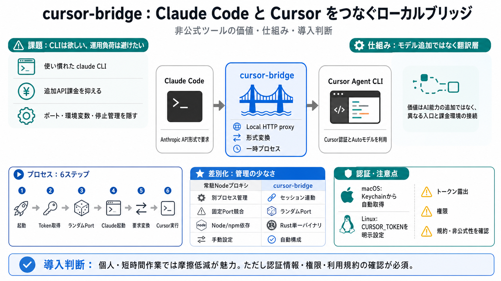

CLIはそのまま
利用者は使い慣れた claude CLIを入口として、エージェント型の開発作業を続けたい。

Repository Brief
cursor-bridgeは、Claude CodeのAPI呼び出しをCursor側へ中継する非公式のローカルツールです。利便性だけでなく、認証・権限・規約まで含めて導入可否を読み解きます。
The Friction
Claude Codeの操作体験を保ちながら、別契約のAPI課金や常駐プロキシ管理を減らしたい。cursor-bridgeは、その摩擦を一つの起動コマンドへ圧縮します。
利用者は使い慣れた claude CLIを入口として、エージェント型の開発作業を続けたい。
既存のCursorサブスクリプションとAutoモデルを活用し、Anthropic APIの追加費用を避ける狙いです。
ポート、環境変数、サーバ停止、npm依存を手作業で管理しない体験を目指します。
Translation Layer
Claude Codeが期待するAnthropic API形式を受け取り、CursorのAgent CLIが扱える実行へ変換します。価値の中心はAI能力の追加ではなく、異なる入口と課金環境の接続です。
Request Path
起動時に認証とローカル中継を準備し、Claude Codeの通信先をプロキシへ向けます。受けた要求はCursor Agent CLIの呼び出しへ翻訳されます。
cursor-bridge を実行
Cursor認証情報を読み取る
ランダムなローカルポートで待受
必要な環境変数を設定
Anthropic形式を翻訳
Agent CLI経由でバックエンドへ
Session Bound
常駐サービスとして別管理するのではなく、起動したセッションの寿命に中継プロセスを結びつけます。終了時のクリーンアップまでを一連の動作に含める設計です。
認証情報を取得し、利用可能なランダムポートを選びます。
Claude Code向けの接続先と必要な環境変数を構成します。
セッション中のAPI要求を受け、Cursor側の実行へ変換します。
Claude Code終了後に一時プロキシを停止する想定です。
Token Sources
macOSはKeychain（キーチェーン）からの自動取得、Linuxは環境変数による明示設定が前提です。どちらもCursorトークンをブリッジが扱う点は共通します。
MACOS
READMEでは、Cursorの認証トークンをmacOS Keychainから読み取る動作が説明されています。
利便性は高いが、アクセス対象・権限・エラー時の挙動をコードで確認したい。
LINUX
Keychainの自動フォールバックはなく、利用者が環境変数へトークンを設定します。
Shell履歴、CIログ、子プロセスへの継承、診断出力への露出を管理する必要がある。
Operational Difference
READMEが比較対象にするのは、Node.jsで動く常駐サーバ型のプロキシです。cursor-bridgeは依存・ポート・環境変数・停止作業をセッション内へ隠します。
One Binary
単一のRustバイナリにより、ランタイムや常駐サーバの準備を減らすことが主なDX上の価値です。短時間の作業や個人環境では、とくに効果が見えやすくなります。
BINARY
READMEでは、小さなRust製バイナリとして説明されています。
README CLAIMDEPENDENCY
Node.jsランタイムやパッケージ依存の導入・更新管理を避けます。
LOWER FRICTIONOPERATION
利用者が別プロセスの起動確認や停止忘れを管理しない設計です。
SESSION SCOPEDCost Proposition
Cursorサブスクリプションに含まれるAutoモデルを利用し、Claude Code用のAnthropic APIクレジットを別途購入しない、というのがREADMEの費用対効果です。
Conditional Benefit
費用ゼロを保証する言葉ではなく、既存契約の範囲で追加のAnthropic課金を抑えるという意味です。利用枠、仕様変更、規約適合は別の判断軸です。
Cursorの対象プランでAutoモデルが利用でき、必要な利用枠が残っていること。
非公式の変換経路が、CLIやバックエンドの変更後も動作すること。
対象サービスの利用条件が、この認証・中継・代理実行の方法を許容すること。
「追加のAnthropic API請求がない」という便益と、「完全無料」「無制限」「規約上問題ない」という結論は同じではありません。
Trust Concentration
cursor-bridgeは認証トークン、ローカル通信、環境変数、子プロセス起動の交点になります。これは脆弱性の断定ではなく、優先して監査すべき境界を示します。
TOKEN
どの資格情報へアクセスし、メモリ上でいつまで保持し、確実に破棄するか。
LOGGING
Token、Header、Prompt、Responseが標準出力やエラーログへ出ないか。
LOOPBACK
ProxyがlocalhostだけへBindされ、第三者プロセスから保護されているか。
ENVIRONMENT
設定値が不要な子プロセスやShellへ残らず、終了後に汚染しないか。
NETWORK
通信先、TLS検証、リダイレクト、Telemetryの有無を追跡できるか。
SUPPLY CHAIN
Release artifact、署名、Hash、依存クレートを検証できるか。
No Workspace Sandbox
READMEでは、Workspace sandbox（作業領域の隔離）がないと説明されています。エージェントのファイル編集やコマンド実行は、起動場所の権限を引き継ぎます。
LOWER RISK CONTEXT
新しいGit branch、限定権限のユーザー、秘密情報を除いたリポジトリ、復元可能な環境で試します。
変更差分を確認し、破壊的操作の影響を局所化できる。
HIGH RISK CONTEXT
本番資格情報、ホームディレクトリ、共有Volume、Deploy権限、重要な未追跡ファイルが存在する環境です。
誤編集やコマンド実行の影響範囲が、プロジェクト外へ広がり得る。
「ローカルで動く」ことは「隔離されている」ことを意味しません。安全性は、起動ユーザーの権限と現在ディレクトリの選び方に依存します。
Known Boundaries
制約は単なる機能不足ではなく、利用できる環境と運用モデルを決めます。組織導入では、とくに権限分離と認証管理へ直結します。
エージェントは現在ディレクトリで動き、Workspace単位の強制隔離は提供されません。
SAFETY IMPACTCURSOR_TOKEN を利用者側で安全に注入・更新・削除する必要があります。
SECRET OPS複数アカウントのRotation（切り替え運用）や負荷分散はありません。
NO ROTATIONPermission Layer
cursor-bridgeはAnthropicおよびCursor／Anysphereの公式プロジェクトではなく、READMEも自己責任を明記しています。免責文は規約適合を証明しません。
両サービスの提携、承認、サポートを受けた統合ではありません。
認証トークンの利用方法、代理実行、アクセス経路、利用枠の扱いを公式条件で確認します。
規約、API、CLI、Autoモデルの条件変更により、動作や許容範囲が変わり得ます。
法的評価は地域、契約主体、用途、アカウント種別で変わります。READMEだけを根拠に「合法」「規約適合」と断定しないことが安全です。
Known vs Unknown
提示資料は機能、狙い、制約を説明しますが、実際のコード挙動までは検証していません。導入判断にはソースと公式条件の追加確認が必要です。
README CONFIRMS
一時ローカルプロキシ、Cursor Token取得、Agent CLIへの変換、セッション終了時の後始末、OS別認証、既知の制約。
DOCUMENTEDNOT YET VERIFIED
通信先、ログ内容、Tokenの保持時間、例外時の停止、設定上書き、依存の脆弱性、Release binaryとSourceの一致。
REVIEW REQUIRED「入力データに書かれていない」は「安全でない」の証拠ではありません。ただし、認証を扱うツールでは未確認のまま導入する理由にもなりません。
Before Adoption
Policy、Security、Operationsのどれか一つでも未確認なら、本番利用へ進めません。便利さの評価は、この三条件を満たした後に行います。
POLICY GATE
CursorとAnthropicの最新規約、組織ポリシー、契約プランの許容範囲を担当者が確認します。
SECURITY GATE
取得、保存、ログ、送信先、待受範囲、配布物の真正性をソースと実測で確認します。
OPERATIONS GATE
専用作業コピー、最小権限、秘密情報の分離、更新手順、緊急停止方法を用意します。
Code Inspection
全コードを均等に読むより、資格情報・HTTP待受・外部プロセス・終了処理を先に追います。READMEの説明と実装が一致するかを確認します。
Keychain照会条件、環境変数、Fallback、エラー出力を追う。
Bind address、ランダムポート、認証、同一端末上の攻撃面を確認。
Header、Prompt、Tool call、Responseの変換と欠落を確認。
実行するCLI、引数、PATH解決、環境変数の継承範囲を確認。
通常終了、Signal、Crash、子プロセス異常時の後始末を確認。
Source、Lockfile、Release artifact、Hash、再現Buildを照合。
Safe Trial
最初から重要リポジトリへ入れず、通信・変更差分・Token露出を観測できる小さな実験にします。成功条件と中止条件を先に決めます。
使い捨てClone、専用Branch、最小権限ユーザーを用意。
Process、Port、DNS、通信先、ログ、環境変数を記録。
終了後の待受、残存Process、Token、ファイル差分を確認。
便益、安定性、規約、リスクを再評価し、許可範囲を限定。
中止条件の例：想定外の通信先、Tokenを含むログ、終了後のProxy残存、作業範囲外の変更、公式条件との不整合。
Where It Fits
価値が出やすいのは、復元可能なローカル作業で運用負荷を減らしたい場面です。強い監査、隔離、公式サポートが必要な環境では追加対策が欠かせません。
BETTER FIT
個人の試験、短時間セッション、復元可能なOSS作業、機密情報を含まないRepository、Source reviewが可能な利用者。
CONDITIONAL YESPOORER FIT
本番運用、顧客データ、規制対象情報、強制Sandbox、複数アカウント統制、Vendor supportが必要な組織。
REVIEW OR AVOID適合性はツール単体では決まりません。データ分類、端末権限、契約条件、監査能力、許容できる停止リスクの組み合わせで判断します。
Source Boundary
本デッキの事実記述は、利用者から提示されたcursor-bridge READMEの要約に限定しています。Repository URL、Commit、取得日、実コード、公式規約本文は入力に含まれていません。
PRIMARY INPUT
機能、Local HTTP proxy、Token取得、Cursor Agent CLIへの変換、Rust単一バイナリ、制約、免責に関する提示内容。
Repository location / commit / retrieval date: not supplied
REQUIRED FOLLOW-UP
対象RepositoryのSourceとRelease、Cursor／Anysphereの最新利用条件、Anthropicの最新利用条件、所属組織のSecurity policy。
Terms and product behavior can change; verify against current official text
この資料は技術・運用上の論点整理であり、法的助言、規約適合の保証、セキュリティ監査の完了を意味しません。
Conditional Recommendation
cursor-bridgeは、Claude Codeの操作性とCursorの利用環境を一コマンドで結ぶ実務的な発想です。ただし、Token・Sandbox・規約という三つの境界を確認できない限り、安全な省コスト策とは断定できません。
folder name will be Cursor dash Cloud. So, you can name the folder anything. Just select this folder, then click here se…
Claude Code requires a Pro, Max, Team, Enterprise, or Console account. The free Claude.ai plan does not include Claude C…
Claude Code CLI allows developers to integrate AI-powered coding assistance into everyday terminal workflows. This guide…
Learn how to install and use Claude Code, the powerful AI coding agent from Anthropic that lets you build apps faster th…
The key insight for Cursor users is that adding Claude Code to your toolkit doesn't mean abandoning what you already lov…